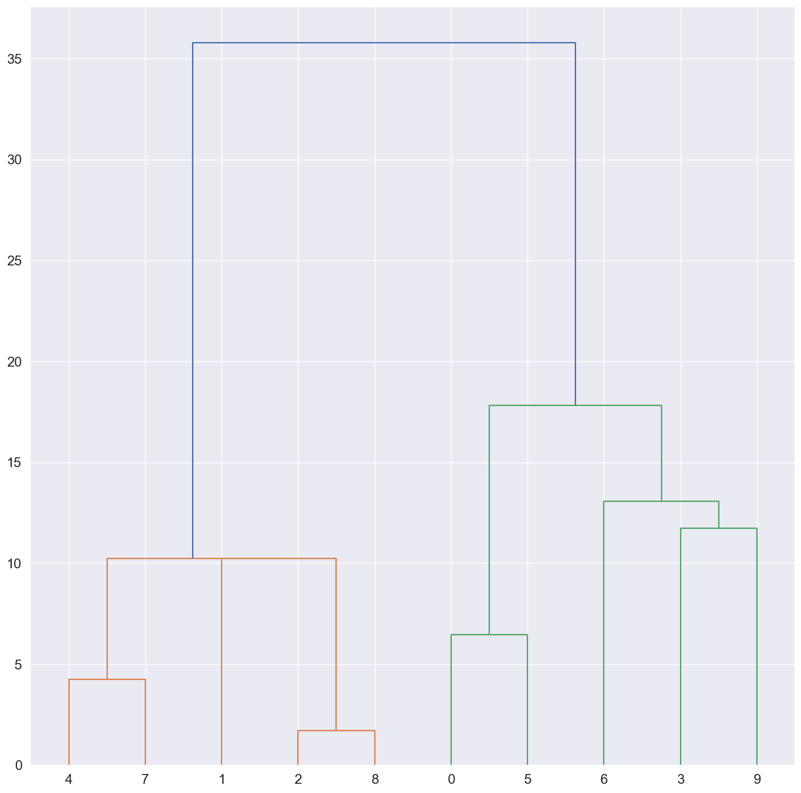
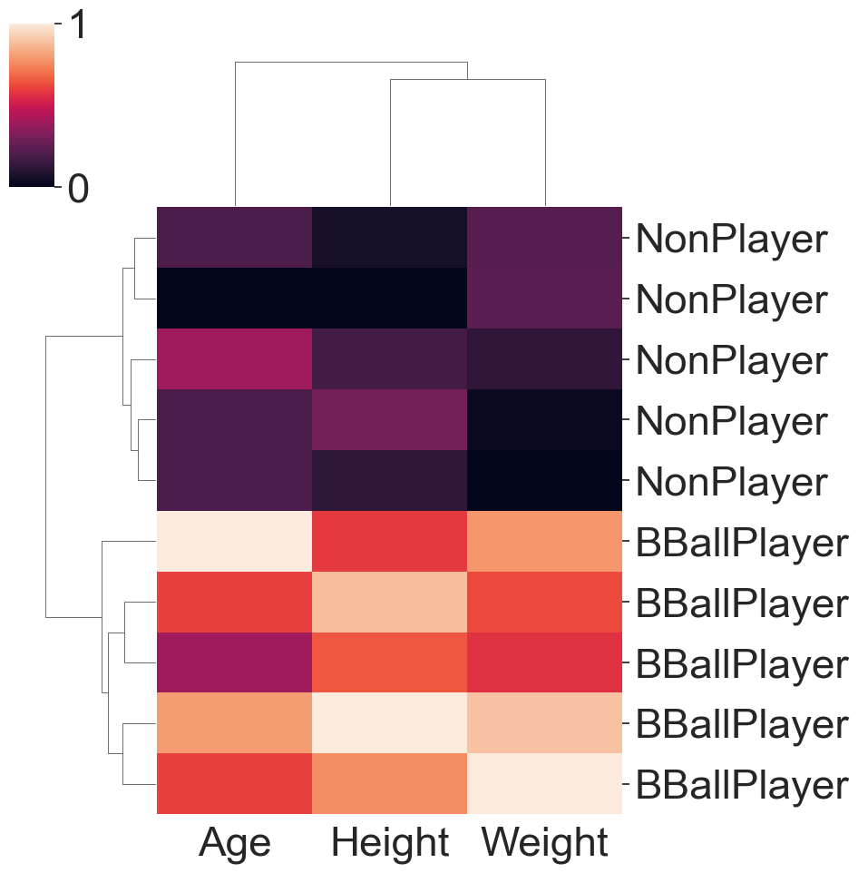
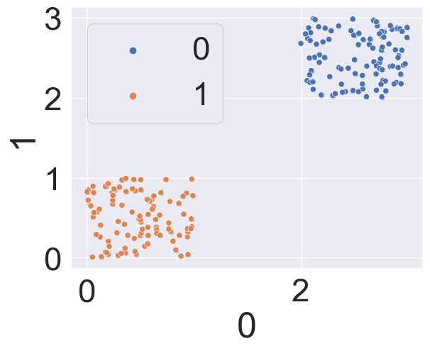
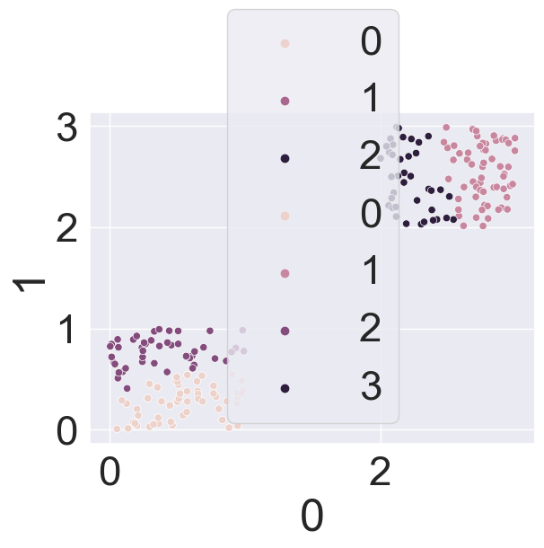
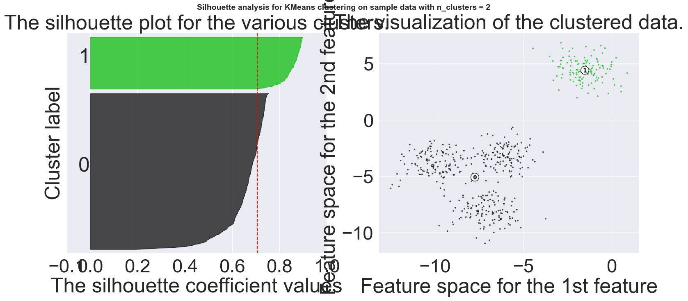
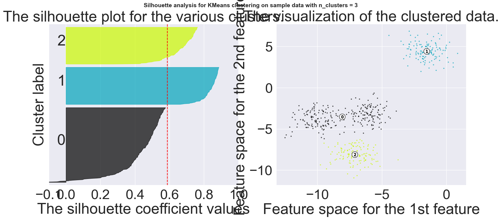
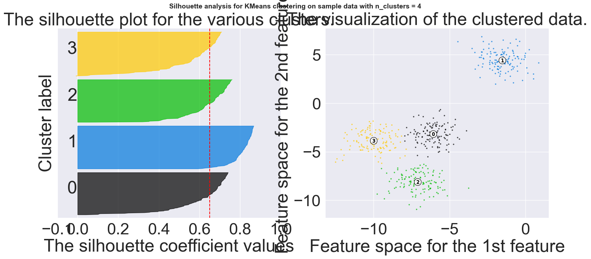
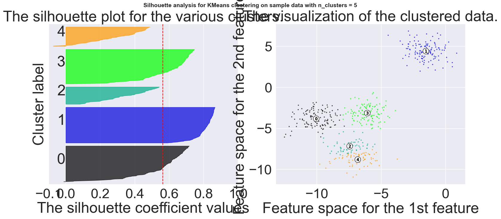
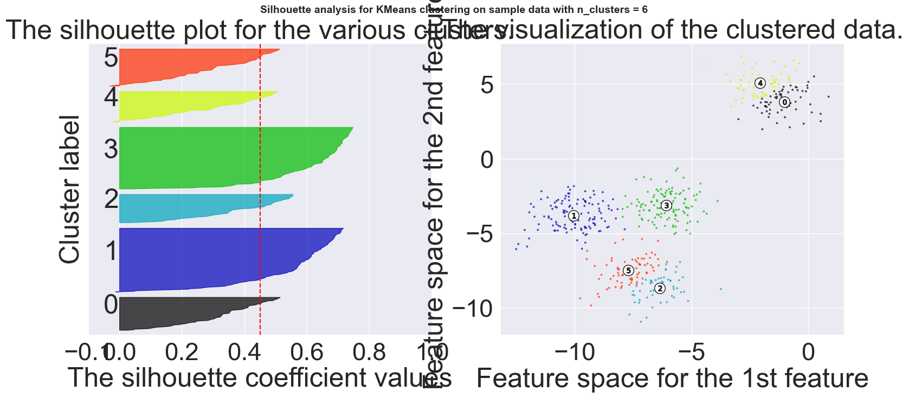

import nltk
import pandas as pd
import sklearn
from sklearn.cluster import KMeans
import numpy as np
from sklearn.feature_extraction.text import CountVectorizer
from sklearn.feature_extraction.text import TfidfVectorizer
from nltk.tokenize import word_tokenize
from nltk.probability import FreqDist
import matplotlib.pyplot as plt
from nltk.corpus import stopwords
## For Stemming
from nltk.stem import PorterStemmer
from nltk.tokenize import sent_tokenize, word_tokenize
import os
import re ## for regular expressions
from mpl_toolkits.mplot3d import Axes3D
#from nltk.stem.porter import PorterStemmerClustering Record and Text Data
CLUSTERING
Note to Ami: ClusteringRecordandTextData.py – …Scripts_7
Clustering Record and Text Data
Gates
Clustering Text Data from a Corpus
DATA LINK: [https://drive.google.com/drive/folders/1VSofcdX6g86hjnofMDQJwYVveT544Oy4?usp=sharing]
path=os.path.join('ClusterCorpus')
## Get the text data first
print("calling os...")
FileNameList=os.listdir(path)
## check the TYPE
print(type(FileNameList))
print(FileNameList)calling os...
<class 'list'>
['Choc1.txt', 'Choc2.txt', 'Choc3.txt', 'Choc4.txt', 'Choc5.txt', 'Choc6.txt', 'Hike1.txt', 'Hike2.txt', 'Hike3.txt', 'Hike4.txt', 'Hike5.txt', 'Hike6.txt']I need an empty list to start with to build a list of complete paths to files.
Notice that I defined path above. I also need a list of file names.
ListOfCompleteFilePaths=[]
ListOfJustFileNames=[]
for name in os.listdir(path):
## BUILD the names dynamically....
name=name.lower()
print(path+ "/" + name)
next=path+ "/" + name
nextnameL=[re.findall(r'[a-z]+', name)[0]]
nextname=nextnameL[0] ## Keep just the name
print(nextname) ## ALWAYS check yourself
ListOfCompleteFilePaths.append(next)
ListOfJustFileNames.append(nextname)
#print("DONE...")
print("full list...")
print(ListOfCompleteFilePaths)
print(ListOfJustFileNames)ClusterCorpus/choc1.txt
choc
ClusterCorpus/choc2.txt
choc
ClusterCorpus/choc3.txt
choc
ClusterCorpus/choc4.txt
choc
ClusterCorpus/choc5.txt
choc
ClusterCorpus/choc6.txt
choc
ClusterCorpus/hike1.txt
hike
ClusterCorpus/hike2.txt
hike
ClusterCorpus/hike3.txt
hike
ClusterCorpus/hike4.txt
hike
ClusterCorpus/hike5.txt
hike
ClusterCorpus/hike6.txt
hike
full list...
['ClusterCorpus/choc1.txt', 'ClusterCorpus/choc2.txt', 'ClusterCorpus/choc3.txt', 'ClusterCorpus/choc4.txt', 'ClusterCorpus/choc5.txt', 'ClusterCorpus/choc6.txt', 'ClusterCorpus/hike1.txt', 'ClusterCorpus/hike2.txt', 'ClusterCorpus/hike3.txt', 'ClusterCorpus/hike4.txt', 'ClusterCorpus/hike5.txt', 'ClusterCorpus/hike6.txt']
['choc', 'choc', 'choc', 'choc', 'choc', 'choc', 'hike', 'hike', 'hike', 'hike', 'hike', 'hike']Create the Stemmer Function
####################################################
## Create the Stemmer Function.........
######################################################
## Instantiate it
A_STEMMER=PorterStemmer()
## test it
print(A_STEMMER.stem("fishers"))
#----------------------------------------
# Use NLTK's PorterStemmer in a function - DEFINE THE FUNCTION
#-------------------------------------------------------
def MY_STEMMER(str_input):
## Only use letters, no punct, no nums, make lowercase...
words = re.sub(r"[^A-Za-z\-]", " ", str_input).lower().split()
words = [A_STEMMER.stem(word) for word in words] ## Use the Stemmer...
return wordsfisherCountVectorizers be set as ‘content’, ‘file’, or ‘filename’ If set as ‘filename’, the sequence passed as an argument to fit is expected to be a list of filenames [https://scikit-learn.org/stable/modules/generated/]
sklearn.feature_extraction.text.CountVectorizer.html# examples-using-sklearn-feature-extraction-text-countvectorizer
##################################################################
## Tokenize and Vectorize the text data from the corpus...
##############################################################
## Instantiate three Vectorizers.....
## Normal CV
MyVectCount=CountVectorizer(input='filename',
stop_words='english',
max_features=100
)
## Tf-idf vectorizer
MyVectTFIdf=TfidfVectorizer(input='filename',
stop_words='english',
max_features=100
)
## Create a CountVectorizer object that you can use with the Stemmer
MyCV_Stem = CountVectorizer(input="filename",
stop_words='english',
tokenizer=MY_STEMMER,
lowercase=True)
## NOw I can vectorize using my list of complete paths to my files
DTM_Count=MyVectCount.fit_transform(ListOfCompleteFilePaths)
DTM_TF=MyVectTFIdf.fit_transform(ListOfCompleteFilePaths)
DTM_stem=MyCV_Stem.fit_transform(ListOfCompleteFilePaths)
#####################
## Get the complete vocab - the column names
## !!!!!!!!! FOr TF and CV - but NOT for stemmed...!!!
##################
ColumnNames=MyVectCount.get_feature_names_out()
print("The vocab is: ", ColumnNames, "\n\n")
ColNamesStem=MyCV_Stem.get_feature_names_out()
print("The stemmed vocab is\n", ColNamesStem)The vocab is: ['bring' 'chocolate' 'coffee' 'day' 'delicious' 'dog' 'drink' 'eat'
'exercise' 'feed' 'gear' 'good' 'great' 'healthy' 'hike' 'like'
'mountain' 'needed' 'taking']
The stemmed vocab is
['bring' 'chocol' 'coffe' 'day' 'delici' 'dog' 'drink' 'eat' 'exercis'
'feed' 'gear' 'good' 'great' 'healthi' 'hike' 'like' 'mountain' 'need'
'togeth']## Use pandas to create data frames
DF_Count=pd.DataFrame(DTM_Count.toarray(),columns=ColumnNames)
DF_TF=pd.DataFrame(DTM_TF.toarray(),columns=ColumnNames)
DF_stem=pd.DataFrame(DTM_stem.toarray(),columns=ColNamesStem)
print(DF_Count)
print(DF_TF.head())
print(DF_stem) bring chocolate coffee day delicious dog drink eat exercise feed \
0 0 3 2 1 2 0 1 1 0 0
1 0 3 2 0 1 1 0 0 0 0
2 0 3 1 0 2 0 0 0 0 0
3 0 5 3 1 3 0 0 1 0 0
4 0 9 4 2 5 1 0 2 0 1
5 0 5 3 1 3 0 0 1 0 0
6 1 1 0 0 0 0 0 0 2 0
7 0 0 0 0 0 2 0 0 0 0
8 0 1 0 0 0 3 0 0 0 0
9 0 0 0 0 0 2 0 0 0 0
10 0 0 0 0 0 4 0 0 0 0
11 0 0 0 0 0 4 0 0 0 0
gear good great healthy hike like mountain needed taking
0 0 0 0 0 1 0 0 0 0
1 0 0 2 0 0 0 0 0 0
2 0 0 0 2 0 1 0 0 0
3 0 0 2 0 0 0 0 0 0
4 0 0 2 0 0 0 0 0 0
5 0 0 2 0 0 0 0 0 0
6 0 2 0 0 3 0 0 0 1
7 2 0 0 0 4 0 0 1 0
8 1 4 0 0 4 0 0 0 0
9 2 0 0 0 3 0 2 0 0
10 4 0 0 0 6 0 4 0 0
11 4 0 0 0 7 0 2 1 0
bring chocolate coffee day delicious dog drink \
0 0.0 0.548759 0.433061 0.261530 0.433061 0.000000 0.384075
1 0.0 0.595694 0.470100 0.000000 0.235050 0.215664 0.000000
2 0.0 0.486345 0.191903 0.000000 0.383806 0.000000 0.000000
3 0.0 0.632517 0.449244 0.180869 0.449244 0.000000 0.000000
4 0.0 0.693190 0.364694 0.220243 0.455867 0.083654 0.000000
eat exercise feed gear good great healthy hike \
0 0.261530 0.0 0.000000 0.0 0.0 0.000000 0.000000 0.198672
1 0.000000 0.0 0.000000 0.0 0.0 0.567798 0.000000 0.000000
2 0.000000 0.0 0.000000 0.0 0.0 0.000000 0.680784 0.000000
3 0.180869 0.0 0.000000 0.0 0.0 0.361738 0.000000 0.000000
4 0.220243 0.0 0.161721 0.0 0.0 0.220243 0.000000 0.000000
like mountain needed taking
0 0.000000 0.0 0.0 0.0
1 0.000000 0.0 0.0 0.0
2 0.340392 0.0 0.0 0.0
3 0.000000 0.0 0.0 0.0
4 0.000000 0.0 0.0 0.0
bring chocol coffe day delici dog drink eat exercis feed gear \
0 0 3 2 1 2 0 1 1 0 0 0
1 0 3 2 0 1 1 0 0 0 0 0
2 0 3 1 0 2 0 0 0 0 0 0
3 0 5 3 1 3 0 0 1 0 0 0
4 0 9 4 2 5 1 0 2 0 1 0
5 0 5 3 1 3 0 0 1 0 0 0
6 1 1 0 0 0 0 0 0 2 0 0
7 0 0 0 0 0 2 0 0 0 0 2
8 0 1 0 0 0 3 0 0 0 0 1
9 0 0 0 0 0 2 0 0 0 0 2
10 0 0 0 0 0 4 0 0 0 0 4
11 0 0 0 0 0 4 0 0 0 0 4
good great healthi hike like mountain need togeth
0 0 0 0 1 0 0 0 0
1 0 2 0 0 0 0 0 1
2 0 0 2 0 1 0 0 0
3 0 2 0 0 0 0 0 1
4 0 2 0 0 0 0 0 1
5 0 2 0 0 0 0 0 1
6 2 0 0 3 0 0 0 0
7 0 0 0 4 0 0 1 0
8 4 0 0 4 0 0 0 0
9 0 0 0 3 0 2 0 0
10 0 0 0 6 0 4 0 0
11 0 0 0 7 0 2 1 0 OK - now we have vectorized the data - and removed punct, numbers, etc.
From here, we can update the names of the rows without adding labels to the data.
We CANNOT have labels in the data because: (1) Labels are not numeric and (2) Labels are NOT data - they are labels.
## Now update the row names
MyDict={}
for i in range(0, len(ListOfJustFileNames)):
MyDict[i] = ListOfJustFileNames[i]
print("MY DICT:", MyDict)
DF_Count=DF_Count.rename(MyDict, axis="index")
print(DF_Count)
DF_TF=DF_TF.rename(MyDict, axis="index")
print(DF_TF)
## That's pretty!MY DICT: {0: 'choc', 1: 'choc', 2: 'choc', 3: 'choc', 4: 'choc', 5: 'choc', 6: 'hike', 7: 'hike', 8: 'hike', 9: 'hike', 10: 'hike', 11: 'hike'}
bring chocolate coffee day delicious dog drink eat exercise \
choc 0 3 2 1 2 0 1 1 0
choc 0 3 2 0 1 1 0 0 0
choc 0 3 1 0 2 0 0 0 0
choc 0 5 3 1 3 0 0 1 0
choc 0 9 4 2 5 1 0 2 0
choc 0 5 3 1 3 0 0 1 0
hike 1 1 0 0 0 0 0 0 2
hike 0 0 0 0 0 2 0 0 0
hike 0 1 0 0 0 3 0 0 0
hike 0 0 0 0 0 2 0 0 0
hike 0 0 0 0 0 4 0 0 0
hike 0 0 0 0 0 4 0 0 0
feed gear good great healthy hike like mountain needed taking
choc 0 0 0 0 0 1 0 0 0 0
choc 0 0 0 2 0 0 0 0 0 0
choc 0 0 0 0 2 0 1 0 0 0
choc 0 0 0 2 0 0 0 0 0 0
choc 1 0 0 2 0 0 0 0 0 0
choc 0 0 0 2 0 0 0 0 0 0
hike 0 0 2 0 0 3 0 0 0 1
hike 0 2 0 0 0 4 0 0 1 0
hike 0 1 4 0 0 4 0 0 0 0
hike 0 2 0 0 0 3 0 2 0 0
hike 0 4 0 0 0 6 0 4 0 0
hike 0 4 0 0 0 7 0 2 1 0
bring chocolate coffee day delicious dog drink \
choc 0.000000 0.548759 0.433061 0.261530 0.433061 0.000000 0.384075
choc 0.000000 0.595694 0.470100 0.000000 0.235050 0.215664 0.000000
choc 0.000000 0.486345 0.191903 0.000000 0.383806 0.000000 0.000000
choc 0.000000 0.632517 0.449244 0.180869 0.449244 0.000000 0.000000
choc 0.000000 0.693190 0.364694 0.220243 0.455867 0.083654 0.000000
choc 0.000000 0.632517 0.449244 0.180869 0.449244 0.000000 0.000000
hike 0.293798 0.139924 0.000000 0.000000 0.000000 0.000000 0.000000
hike 0.000000 0.000000 0.000000 0.000000 0.000000 0.374925 0.000000
hike 0.000000 0.108980 0.000000 0.000000 0.000000 0.355095 0.000000
hike 0.000000 0.000000 0.000000 0.000000 0.000000 0.382758 0.000000
hike 0.000000 0.000000 0.000000 0.000000 0.000000 0.382758 0.000000
hike 0.000000 0.000000 0.000000 0.000000 0.000000 0.401696 0.000000
eat exercise feed gear good great healthy \
choc 0.261530 0.000000 0.000000 0.000000 0.000000 0.000000 0.000000
choc 0.000000 0.000000 0.000000 0.000000 0.000000 0.567798 0.000000
choc 0.000000 0.000000 0.000000 0.000000 0.000000 0.000000 0.680784
choc 0.180869 0.000000 0.000000 0.000000 0.000000 0.361738 0.000000
choc 0.220243 0.000000 0.161721 0.000000 0.000000 0.220243 0.000000
choc 0.180869 0.000000 0.000000 0.000000 0.000000 0.361738 0.000000
hike 0.000000 0.587595 0.000000 0.000000 0.504634 0.000000 0.000000
hike 0.000000 0.000000 0.000000 0.447533 0.000000 0.000000 0.000000
hike 0.000000 0.000000 0.000000 0.141287 0.786069 0.000000 0.000000
hike 0.000000 0.000000 0.000000 0.456883 0.000000 0.000000 0.000000
hike 0.000000 0.000000 0.000000 0.456883 0.000000 0.000000 0.000000
hike 0.000000 0.000000 0.000000 0.479488 0.000000 0.000000 0.000000
hike like mountain needed taking
choc 0.198672 0.000000 0.000000 0.000000 0.000000
choc 0.000000 0.000000 0.000000 0.000000 0.000000
choc 0.000000 0.340392 0.000000 0.000000 0.000000
choc 0.000000 0.000000 0.000000 0.000000 0.000000
choc 0.000000 0.000000 0.000000 0.000000 0.000000
choc 0.000000 0.000000 0.000000 0.000000 0.000000
hike 0.455921 0.000000 0.000000 0.000000 0.293798
hike 0.749851 0.000000 0.000000 0.311238 0.000000
hike 0.473460 0.000000 0.000000 0.000000 0.000000
hike 0.574137 0.000000 0.561356 0.000000 0.000000
hike 0.574137 0.000000 0.561356 0.000000 0.000000
hike 0.702968 0.000000 0.294565 0.166730 0.000000 Let’s Cluster……..
# Using sklearn
## you will need
## from sklearn.cluster import KMeans
## import numpy as np
kmeans_object_Count = sklearn.cluster.KMeans(n_clusters=2)
#print(kmeans_object)
kmeans_object_Count.fit(DF_Count)
# Get cluster assignment labels
labels = kmeans_object_Count.labels_
prediction_kmeans = kmeans_object_Count.predict(DF_Count)
#print(labels)
print(prediction_kmeans)
# Format results as a DataFrame
Myresults = pd.DataFrame([DF_Count.index,labels]).T
print(Myresults)[1 1 1 1 1 1 0 0 0 0 0 0]
0 1
0 choc 1
1 choc 1
2 choc 1
3 choc 1
4 choc 1
5 choc 1
6 hike 0
7 hike 0
8 hike 0
9 hike 0
10 hike 0
11 hike 0############# ---> ALWAYS USE VIS! ----------
print(DF_Count)
print(DF_Count["chocolate"])
x=DF_Count["chocolate"] ## col 1 starting from 0
y=DF_Count["hike"] ## col 14 starting from 0
z=DF_Count["coffee"] ## col 2 starting from 0
colnames=DF_Count.columns
print(colnames)
#print(x,y,z)
fig1 = plt.figure(figsize=(12, 12))
ax1 = Axes3D(fig1, rect=[0, 0, .90, 1], elev=48, azim=134)
ax1.scatter(x,y,z, cmap="RdYlGn", edgecolor='k', s=200,c=prediction_kmeans)
ax1.w_xaxis.set_ticklabels([])
ax1.w_yaxis.set_ticklabels([])
ax1.w_zaxis.set_ticklabels([])
ax1.set_xlabel('Chocolate', fontsize=25)
ax1.set_ylabel('Hike', fontsize=25)
ax1.set_zlabel('Coffee', fontsize=25)
#plt.show()
centers = kmeans_object_Count.cluster_centers_
print(centers)
#print(centers)
C1=centers[0,(1,2,14)]
print(C1)
C2=centers[1,(1,2,14)]
print(C2)
xs=C1[0],C2[0]
print(xs)
ys=C1[1],C2[1]
zs=C1[2],C2[2]
ax1.scatter(xs,ys,zs, c='black', s=2000, alpha=0.2)
plt.show()
#plt.cla()
#---------------- end of choc, dog, hike, example.... bring chocolate coffee day delicious dog drink eat exercise \
choc 0 3 2 1 2 0 1 1 0
choc 0 3 2 0 1 1 0 0 0
choc 0 3 1 0 2 0 0 0 0
choc 0 5 3 1 3 0 0 1 0
choc 0 9 4 2 5 1 0 2 0
choc 0 5 3 1 3 0 0 1 0
hike 1 1 0 0 0 0 0 0 2
hike 0 0 0 0 0 2 0 0 0
hike 0 1 0 0 0 3 0 0 0
hike 0 0 0 0 0 2 0 0 0
hike 0 0 0 0 0 4 0 0 0
hike 0 0 0 0 0 4 0 0 0
feed gear good great healthy hike like mountain needed taking
choc 0 0 0 0 0 1 0 0 0 0
choc 0 0 0 2 0 0 0 0 0 0
choc 0 0 0 0 2 0 1 0 0 0
choc 0 0 0 2 0 0 0 0 0 0
choc 1 0 0 2 0 0 0 0 0 0
choc 0 0 0 2 0 0 0 0 0 0
hike 0 0 2 0 0 3 0 0 0 1
hike 0 2 0 0 0 4 0 0 1 0
hike 0 1 4 0 0 4 0 0 0 0
hike 0 2 0 0 0 3 0 2 0 0
hike 0 4 0 0 0 6 0 4 0 0
hike 0 4 0 0 0 7 0 2 1 0
choc 3
choc 3
choc 3
choc 5
choc 9
choc 5
hike 1
hike 0
hike 1
hike 0
hike 0
hike 0
Name: chocolate, dtype: int64
Index(['bring', 'chocolate', 'coffee', 'day', 'delicious', 'dog', 'drink',
'eat', 'exercise', 'feed', 'gear', 'good', 'great', 'healthy', 'hike',
'like', 'mountain', 'needed', 'taking'],
dtype='object')
[[1.66666667e-01 3.33333333e-01 0.00000000e+00 5.55111512e-17
2.22044605e-16 2.50000000e+00 1.38777878e-17 5.55111512e-17
3.33333333e-01 1.38777878e-17 2.16666667e+00 1.00000000e+00
1.11022302e-16 2.77555756e-17 4.50000000e+00 1.38777878e-17
1.33333333e+00 3.33333333e-01 1.66666667e-01]
[1.38777878e-17 4.66666667e+00 2.50000000e+00 8.33333333e-01
2.66666667e+00 3.33333333e-01 1.66666667e-01 8.33333333e-01
2.77555756e-17 1.66666667e-01 2.22044605e-16 0.00000000e+00
1.33333333e+00 3.33333333e-01 1.66666667e-01 1.66666667e-01
1.11022302e-16 2.77555756e-17 1.38777878e-17]]
[0.33333333 0. 4.5 ]
[4.66666667 2.5 0.16666667]
(0.3333333333333335, 4.666666666666666)<Figure size 1200x1200 with 0 Axes>kmeans with record data -
NEW DATA SETS….
DATA:
[https://drive.google.com/file/d/1QtuJO1S-03zDN4f8JgR7cZ1fA3wTZ_m4/view?usp=sharing]
and
[https://drive.google.com/file/d/1sSFzvxkp4wTbna8xAcPBCvInlA_MjNdj/view?usp=sharing]
Dataset1="ClusterSmallDataset5D.csv"
Dataset2="ClusterSmallDataset.csv"
DF5D=pd.read_csv(Dataset1)
DF3D=pd.read_csv(Dataset2)
print(DF3D.head())
print(DF5D.head()) Label Height Weight Age
0 BBallPlayer 84 250 17
1 NonPlayer 72 200 16
2 NonPlayer 70 210 15
3 BBallPlayer 86 278 18
4 NonPlayer 74 190 15
Label Height Weight Age GPA TestScore
0 BBallPlayer 84 250 17 3.8 994
1 NonPlayer 72 200 16 3.5 876
2 NonPlayer 70 210 15 3.6 769
3 BBallPlayer 86 278 18 3.9 901
4 NonPlayer 74 190 15 3.4 899!!!!!!!!!!!!! This dataset has a label
We MUST REMOVE IT before we can proceed
TrueLabel3D=DF3D["Label"]
TrueLabel5D=DF5D["Label"]
print(TrueLabel3D)0 BBallPlayer
1 NonPlayer
2 NonPlayer
3 BBallPlayer
4 NonPlayer
5 BBallPlayer
6 BBallPlayer
7 NonPlayer
8 NonPlayer
9 BBallPlayer
Name: Label, dtype: objectDF3D=DF3D.drop(['Label'], axis=1) #drop Label, axis = 1 is for columns
DF5D=DF5D.drop(['Label'], axis=1)
print(DF3D.head()) Height Weight Age
0 84 250 17
1 72 200 16
2 70 210 15
3 86 278 18
4 74 190 15kmeans_object3D = sklearn.cluster.KMeans(n_clusters=2)
kmeans_object5D = sklearn.cluster.KMeans(n_clusters=2)
#print(kmeans_object)
kmeans_3D=kmeans_object3D.fit(DF3D)
kmeans_5D=kmeans_object5D.fit(DF5D)
# Get cluster assignment labels
labels3D =kmeans_3D.labels_
labels5D =kmeans_5D.labels_
prediction_kmeans_3D = kmeans_object3D.predict(DF3D)
prediction_kmeans_5D = kmeans_object5D.predict(DF5D)
print("Prediction 3D\n")
print(prediction_kmeans_3D)
print("Actual\n")
print(TrueLabel3D)
print("Prediction 5D\n")
print(prediction_kmeans_5D)
print("Actual\n")
print(TrueLabel5D)Prediction 3D
[1 0 0 1 0 1 1 0 0 1]
Actual
0 BBallPlayer
1 NonPlayer
2 NonPlayer
3 BBallPlayer
4 NonPlayer
5 BBallPlayer
6 BBallPlayer
7 NonPlayer
8 NonPlayer
9 BBallPlayer
Name: Label, dtype: object
Prediction 5D
[1 1 0 1 1 1 1 1 0 1]
Actual
0 BBallPlayer
1 NonPlayer
2 NonPlayer
3 BBallPlayer
4 NonPlayer
5 BBallPlayer
6 BBallPlayer
7 NonPlayer
8 NonPlayer
9 BBallPlayer
Name: Label, dtype: objectConvert True Labels from text to numeric labels…
##---------------------
## Convert True Labels from text to numeric labels...
##-----------------------
print(TrueLabel3D)
data_classes = ["BBallPlayer", "NonPlayer"]
dc = dict(zip(data_classes, range(0,2)))
print(dc)
TrueLabel3D_num=TrueLabel3D.map(dc, na_action='ignore')
print(TrueLabel3D_num)0 BBallPlayer
1 NonPlayer
2 NonPlayer
3 BBallPlayer
4 NonPlayer
5 BBallPlayer
6 BBallPlayer
7 NonPlayer
8 NonPlayer
9 BBallPlayer
Name: Label, dtype: object
{'BBallPlayer': 0, 'NonPlayer': 1}
0 0
1 1
2 1
3 0
4 1
5 0
6 0
7 1
8 1
9 0
Name: Label, dtype: int64############# ---> ALWAYS USE VIS! ----------
fig2 = plt.figure(figsize=(12, 12))
ax2 = Axes3D(fig2, rect=[0, 0, .90, 1], elev=48, azim=134)
print(DF3D)
x=DF3D.iloc[:,0] ## Height
y=DF3D.iloc[:,1] ## Weight
z=DF3D.iloc[:,2] ## Age
print(x,y,z)
ax2.scatter(x,y,z, cmap="RdYlGn", edgecolor='k', s=200,c=prediction_kmeans_3D)
ax2.w_xaxis.set_ticklabels([])
ax2.w_yaxis.set_ticklabels([])
ax2.w_zaxis.set_ticklabels([])
ax2.set_xlabel('Height', fontsize=25)
ax2.set_ylabel('Weight', fontsize=25)
ax2.set_zlabel('Age', fontsize=25)
plt.show() Height Weight Age
0 84 250 17
1 72 200 16
2 70 210 15
3 86 278 18
4 74 190 15
5 80 245 16
6 79 267 19
7 71 187 15
8 69 211 14
9 82 289 17
0 84
1 72
2 70
3 86
4 74
5 80
6 79
7 71
8 69
9 82
Name: Height, dtype: int64 0 250
1 200
2 210
3 278
4 190
5 245
6 267
7 187
8 211
9 289
Name: Weight, dtype: int64 0 17
1 16
2 15
3 18
4 15
5 16
6 19
7 15
8 14
9 17
Name: Age, dtype: int64<Figure size 1200x1200 with 0 Axes>These centers should make sense. Notice the actual values….
The BBPlayers will be taller, higher weight, higher age
centers3D = kmeans_3D.cluster_centers_
print(centers3D)
print(centers3D[0,0])
xs=(centers3D[0,0], centers3D[1,0])
ys=(centers3D[0,1], centers3D[1,1])
zs=(centers3D[0,2], centers3D[1,2])
ax2.scatter(xs,ys,zs, c='black', s=2000, alpha=0.2)
plt.show()[[ 71.2 199.6 15. ]
[ 82.2 265.8 17.4]]
71.2Looking at distances
DF3D.head()
## Let's find the distances between each PAIR
## of vectors. What is a vector? It is a data row.
## For example: [84 250 17]
## Where, in this case, 84 is the value for height
## 250 is weight, and 17 is age.
X=DF3Dfrom sklearn.metrics.pairwise import euclidean_distances
## Distance between each pair of rows (vectors)
Euc_dist=euclidean_distances(X, X)
from sklearn.metrics.pairwise import manhattan_distances
Man_dist=manhattan_distances(X,X)
from sklearn.metrics.pairwise import cosine_distances
Cos_dist=cosine_distances(X,X)
from sklearn.metrics.pairwise import cosine_similarity
Cos_Sim=cosine_similarity(X,X)The cosine distance is equivalent to the half the squared euclidean distance if each sample is normalized to unit norm
##############-------------------------->
## Visualize distances
################################################
from sklearn.metrics.pairwise import pairwise_distances
from scipy.spatial.distance import squareform
from scipy.cluster.hierarchy import linkage
from scipy.cluster.hierarchy import dendrogram
import numpy as np
import matplotlib.pyplot as plt
import seaborn as sns
print(Euc_dist)
X=DF3D
#sns.set() #back to defaults
sns.set(font_scale=3)
Z = linkage(squareform(np.around(euclidean_distances(X), 3)))
fig4 = plt.figure(figsize=(15, 15))
ax4 = fig4.add_subplot(111)
dendrogram(Z, ax=ax4)
ax4.tick_params(axis='x', which='major', labelsize=15)
ax4.tick_params(axis='y', which='major', labelsize=15)
#ax5 = fig4.add_subplot(212)
fig4.savefig('exampleSave.png')[[ 0. 51.42956348 42.42640687 28.08914381 60.86049622
6.4807407 17.8325545 64.35837164 41.89272013 39.05124838]
[ 51.42956348 0. 10.24695077 79.27168473 10.24695077
45.70557953 67.43144667 13.07669683 11.5758369 89.5656184 ]
[ 42.42640687 10.24695077 0. 69.92138443 20.39607805
36.41428291 57.84461946 23.02172887 1.73205081 79.93122043]
[ 28.08914381 79.27168473 69.92138443 0. 88.86506625
33.60059523 13.07669683 92.27675764 69.23871749 11.74734012]
[ 60.86049622 10.24695077 20.39607805 88.86506625 0.
55.33534133 77.26577509 4.24264069 21.61018278 99.34284071]
[ 6.4807407 45.70557953 36.41428291 33.60059523 55.33534133
0. 22.22611077 58.70264049 35.79106034 44.05678154]
[ 17.8325545 67.43144667 57.84461946 13.07669683 77.26577509
22.22611077 0. 80.49844719 57.10516614 22.29349681]
[ 64.35837164 13.07669683 23.02172887 92.27675764 4.24264069
58.70264049 80.49844719 0. 24.10394159 102.6109156 ]
[ 41.89272013 11.5758369 1.73205081 69.23871749 21.61018278
35.79106034 57.10516614 24.10394159 0. 79.13279977]
[ 39.05124838 89.5656184 79.93122043 11.74734012 99.34284071
44.05678154 22.29349681 102.6109156 79.13279977 0. ]]
Normalizing…via scaling MIN MAX
For the heatmap, we must normalize first
#import pandas as pd
from sklearn import preprocessing
x = X.values #returns a numpy array
print(x)
#Instantiate the min-max scaler
min_max_scaler = preprocessing.MinMaxScaler()
x_scaled = min_max_scaler.fit_transform(x)
DF3D_scaled = pd.DataFrame(x_scaled)
print(DF3D.columns)
sns.clustermap(DF3D_scaled,yticklabels=TrueLabel3D,
xticklabels=DF3D.columns)
[[ 84 250 17]
[ 72 200 16]
[ 70 210 15]
[ 86 278 18]
[ 74 190 15]
[ 80 245 16]
[ 79 267 19]
[ 71 187 15]
[ 69 211 14]
[ 82 289 17]]
Index(['Height', 'Weight', 'Age'], dtype='object')<seaborn.matrix.ClusterGrid at 0x23959d8e4c0>
Silhouette and Elbow - Optimal Clusters…
from sklearn.metrics import silhouette_samples, silhouette_score
#import pandas as pd
#import numpy as np
#import seaborn as sns
#from sklearn.cluster import KMeans
#from sklearn.metrics import silhouette_score
The Silhouette Method helps to determine the optimal number of clustersin kmeans clustering…
Silhouette Coefficient = \(\frac{x-y}{max(x,y)}\)
where, - y is the mean intra cluster distance - the mean distance to the other instances in the same cluster. - x depicts mean nearest cluster distance i.e. the mean distance to the instances of the next closest cluster. - The coefficient varies between -1 and 1.
A value close to 1 implies that the instance is close to its cluster is a part of the right cluster. Whereas, a value close to -1 means that the value is assigned to the wrong cluster.
[https://scikit-learn.org/stable/auto_examples/cluster/plot_kmeans_silhouette_analysis.html]
The silhouette_score gives the average value for all the samples. This gives a perspective into the density and separation of the formed clusters
This example is generated from a random mixture of normal data…
ref:[https://towardsdatascience.com/silhouette-coefficient-validating-clustering-techniques-e976bb81d10c]
X= np.random.rand(100,2)
print(X)
Y= 2 + np.random.rand(100,2)
Z= np.concatenate((X,Y))
Z=pd.DataFrame(Z)
print(Z.head())
sns.scatterplot(x=Z[0],y=Z[1])
KMean= KMeans(n_clusters=2)
KMean.fit(Z)
label=KMean.predict(Z)
print(label)
sns.scatterplot(x=Z[0],y=Z[1], hue=label)
print("Silhouette Score for k=2\n",silhouette_score(Z, label))[[0.32976588 0.97079191]
[0.20120356 0.04009186]
[0.38313339 0.27913774]
[0.98233017 0.98146807]
[0.6096413 0.72870224]
[0.42425405 0.56979719]
[0.24153806 0.6710165 ]
[0.03193591 0.66014036]
[0.93198236 0.8070802 ]
[0.98223418 0.38595403]
[0.29497654 0.02886848]
[0.76703864 0.43342235]
[0.01431254 0.84507473]
[0.65040721 0.38089811]
[0.23823512 0.8107643 ]
[0.94111515 0.25991042]
[0.45572627 0.83473494]
[0.83247975 0.09558967]
[0.20284777 0.20313933]
[0.26509032 0.84778321]
[0.48909685 0.47718723]
[0.86557642 0.28014778]
[0.30693886 0.88190572]
[0.69362372 0.81305939]
[0.64513899 0.47749519]
[0.01471519 0.71855359]
[0.21078793 0.14093666]
[0.44518248 0.23969958]
[0.42701161 0.85993369]
[0.65351675 0.35083823]
[0.32982363 0.65587497]
[0.86091611 0.67815325]
[0.36599916 0.99143181]
[0.17482511 0.89020909]
[0.78515537 0.32604585]
[0.13705699 0.01232289]
[0.80673377 0.20571035]
[0.77797354 0.70243472]
[0.05931562 0.89148179]
[0.65497694 0.30307239]
[0.03979499 0.64342724]
[0.57440131 0.53994879]
[0.12617651 0.25778411]
[0.9914637 0.7757916 ]
[0.36288138 0.05929629]
[0.05403529 0.00757979]
[0.6863184 0.27950098]
[0.94625992 0.03982457]
[0.59176025 0.70731618]
[0.5008563 0.27732221]
[0.90075812 0.76669407]
[0.88101781 0.0194176 ]
[0.94537639 0.32350845]
[0.74088958 0.97604603]
[0.62364952 0.63851824]
[0.62738469 0.77219817]
[0.50799597 0.44484189]
[0.35324191 0.41767147]
[0.06100462 0.50890745]
[0.50618373 0.97497591]
[0.90649412 0.54316549]
[0.03898751 0.64848176]
[0.09652992 0.57216035]
[0.06508189 0.81355029]
[0.76725788 0.357547 ]
[0.57440446 0.27846386]
[0.35922301 0.11737743]
[0.57188375 0.37983046]
[0.97711861 0.48355593]
[0.46360129 0.04253321]
[0.94348455 0.36233953]
[0.51066887 0.30619803]
[0.20020994 0.92512926]
[0.29419257 0.45235935]
[0.45147006 0.07778964]
[0.1291848 0.40708444]
[0.32377055 0.05313946]
[0.3678385 0.82611556]
[0.54177132 0.14170721]
[0.50235205 0.47384619]
[0.11817243 0.60617175]
[0.68168374 0.53284906]
[0.56611831 0.71997027]
[0.2437857 0.71717121]
[0.97432412 0.36228003]
[0.17653768 0.07171965]
[0.28273057 0.31086046]
[0.00439608 0.82290895]
[0.24568217 0.7784609 ]
[0.50647348 0.84691517]
[0.0899808 0.28869464]
[0.51983536 0.35566986]
[0.06797467 0.56422025]
[0.56515648 0.72645442]
[0.18736652 0.06251711]
[0.25448242 0.85930775]
[0.61299402 0.60674746]
[0.56977449 0.17392631]
[0.44028695 0.97677308]
[0.4959815 0.51786503]]
0 1
0 0.329766 0.970792
1 0.201204 0.040092
2 0.383133 0.279138
3 0.982330 0.981468
4 0.609641 0.728702[1 1 1 1 1 1 1 1 1 1 1 1 1 1 1 1 1 1 1 1 1 1 1 1 1 1 1 1 1 1 1 1 1 1 1 1 1
1 1 1 1 1 1 1 1 1 1 1 1 1 1 1 1 1 1 1 1 1 1 1 1 1 1 1 1 1 1 1 1 1 1 1 1 1
1 1 1 1 1 1 1 1 1 1 1 1 1 1 1 1 1 1 1 1 1 1 1 1 1 1 0 0 0 0 0 0 0 0 0 0 0
0 0 0 0 0 0 0 0 0 0 0 0 0 0 0 0 0 0 0 0 0 0 0 0 0 0 0 0 0 0 0 0 0 0 0 0 0
0 0 0 0 0 0 0 0 0 0 0 0 0 0 0 0 0 0 0 0 0 0 0 0 0 0 0 0 0 0 0 0 0 0 0 0 0
0 0 0 0 0 0 0 0 0 0 0 0 0 0 0]
Silhouette Score for k=2
0.8160709896912354
## Now - for k = 3
KMean= KMeans(n_clusters=3)
KMean.fit(Z)
label=KMean.predict(Z)
print("Silhouette Score for k=3\n",silhouette_score(Z, label))
sns.scatterplot(x=Z[0],y=Z[1], hue=label)
## Now - for k = 4
KMean= KMeans(n_clusters=4)
KMean.fit(Z)
label=KMean.predict(Z)
print("Silhouette Score for k=4\n",silhouette_score(Z, label))
sns.scatterplot(x=Z[0],y=Z[1], hue=label)Silhouette Score for k=3
0.5972408251103292Silhouette Score for k=4
0.3837068579147534<AxesSubplot: xlabel='0', ylabel='1'>
Silhouette Example from sklearn
from sklearn.datasets import make_blobs
#from sklearn.cluster import KMeans
#from sklearn.metrics import silhouette_samples, silhouette_score
#import matplotlib.pyplot as plt
import matplotlib.cm as cm
#import numpy as np
X, y = make_blobs(n_samples=500,
n_features=2, ## so it is 2D
centers=4,
cluster_std=1,
center_box=(-10.0, 10.0),
shuffle=True,
random_state=1) # For reproducibility
range_n_clusters = [2, 3, 4, 5, 6]
print(X)[[-6.92324165e+00 -1.06695320e+01]
[-8.63062033e+00 -7.13940564e+00]
[-9.63048069e+00 -2.72044935e+00]
[-2.30647659e+00 5.30797676e+00]
[-7.57005366e+00 -3.01446491e+00]
[-1.00051011e+00 2.77905153e+00]
[-4.81826839e+00 -2.77214822e+00]
[-5.33964799e+00 -1.27625764e+00]
[-7.94308840e+00 -3.89993901e+00]
[-5.54924525e+00 -3.41298968e+00]
[-5.14508990e+00 -9.54492198e+00]
[-7.09669936e+00 -8.04074036e+00]
[-5.82641512e+00 -1.96346196e+00]
[-1.83198811e+00 3.52863145e+00]
[-7.34267235e+00 -3.16546482e+00]
[-7.34072825e+00 -6.92427252e+00]
[-7.94653906e+00 -3.36768655e+00]
[-8.24598536e+00 -8.61315821e+00]
[-1.98197711e+00 4.02243551e+00]
[-4.35098035e+00 -3.69476678e+00]
[-1.04768696e+01 -3.60318139e+00]
[-1.10195984e+01 -3.15882031e+00]
[-5.17255904e+00 -4.31835971e+00]
[-2.40671820e+00 6.09894447e+00]
[-6.72149498e+00 -2.88440806e+00]
[-6.58935963e+00 -4.43379548e+00]
[-1.46126019e+00 4.52549851e+00]
[-9.19003455e-01 3.45278927e+00]
[-1.04093517e+01 -2.67482046e+00]
[-6.36722809e+00 -3.32666072e+00]
[-6.72766125e+00 -7.14516267e+00]
[-2.27956075e+00 5.10452190e+00]
[-5.84887560e+00 -3.03970506e+00]
[-6.07993051e+00 -7.08197568e+00]
[-5.26682929e+00 -2.69645055e+00]
[-6.05367512e+00 -9.62979077e+00]
[-1.00822205e+01 -4.25071043e+00]
[-1.18708735e+01 -3.03273343e+00]
[-5.37107307e+00 -7.95635833e+00]
[-9.37590900e+00 -4.55315308e+00]
[-6.63401987e+00 -2.58340356e+00]
[-9.54609655e+00 -2.84917422e+00]
[-1.69825542e+00 2.79071751e+00]
[-5.60217602e+00 -6.59908490e-01]
[-6.03429022e+00 -4.08821196e+00]
[-6.37230784e+00 -8.63190046e+00]
[-1.02264783e+01 -2.33998717e+00]
[-5.95678148e+00 -3.97905701e+00]
[-1.42706535e+00 5.08904128e+00]
[-6.20735304e-01 6.59346952e+00]
[-3.28102793e-01 4.11918201e+00]
[-1.06230545e+01 -4.54719161e+00]
[-9.12674270e+00 -4.46180568e+00]
[-5.24134497e+00 -3.23505873e+00]
[-7.19967531e+00 -7.10400981e+00]
[-1.01136977e+01 -4.12880752e+00]
[-1.03416132e+01 -4.95351774e+00]
[-1.25041532e+01 -6.06751247e+00]
[-9.32331640e+00 -4.67574045e+00]
[-7.32033002e+00 -2.73350095e+00]
[-2.20533407e+00 4.20765201e+00]
[-5.27930518e-01 5.92630669e+00]
[-8.87430034e+00 -3.64808151e+00]
[-6.66948545e+00 -4.26059884e+00]
[-1.37397258e+00 5.29163103e+00]
[-6.60085708e+00 -3.11969688e+00]
[-7.99175412e+00 -8.33564851e+00]
[-6.22447869e+00 -2.43846224e+00]
[-1.11054250e+01 -3.97106687e+00]
[-8.95762335e+00 -4.87178859e+00]
[-6.65461644e+00 -7.29335713e+00]
[-1.09531378e+01 -3.36743812e+00]
[-5.11351008e+00 -2.01881992e+00]
[-7.24251438e+00 -9.66368448e+00]
[-5.34929456e+00 -3.54577332e+00]
[-6.29261332e+00 -3.68892426e+00]
[-7.35387953e+00 -8.54504434e+00]
[-5.78423473e+00 -4.48406848e+00]
[-5.66256325e+00 -2.34390092e+00]
[-8.60893311e+00 -4.61469279e+00]
[-2.52019906e-01 4.53559145e+00]
[-1.92744799e+00 4.93684534e+00]
[-9.41306589e+00 -3.62907430e+00]
[-8.48608233e-01 5.45093196e+00]
[-8.66753040e-01 3.78295914e+00]
[-1.01842915e+01 -4.01017303e+00]
[-7.93192918e+00 -5.42450547e+00]
[-2.75447175e+00 4.57587230e+00]
[-1.17171070e+01 -3.89622755e+00]
[-8.85081213e+00 -4.00305113e+00]
[-1.34392496e+00 2.38428865e+00]
[-8.16203654e+00 -7.31459336e+00]
[-9.18886814e+00 -2.16359386e+00]
[-7.13229260e+00 -4.02296730e+00]
[-4.26103071e-02 4.90923075e+00]
[-7.24449448e+00 -7.65150300e+00]
[-8.13784646e+00 -7.65806949e+00]
[-6.73451345e+00 -1.38330194e+00]
[-8.96369424e+00 -9.27033880e+00]
[ 8.68765801e-01 4.15785509e+00]
[-5.45176929e-01 3.81996593e+00]
[-8.01694428e+00 -8.67137366e+00]
[-3.33375571e+00 5.23151969e+00]
[-1.14385885e+01 -2.72109548e+00]
[-2.52087627e+00 5.08120139e+00]
[-6.84394443e+00 -4.15058222e+00]
[-5.87619738e+00 -3.28078916e+00]
[-1.21819546e+00 4.30633464e+00]
[-2.00341358e+00 4.45008673e+00]
[-1.01077040e+01 -3.94479960e+00]
[-7.03045854e+00 -1.23734756e+00]
[-6.95685137e+00 -8.12381049e+00]
[-2.33022219e+00 4.78405366e+00]
[-9.98435983e+00 -4.64804214e+00]
[-2.33080604e+00 4.39382527e+00]
[-1.07796242e+01 -4.39085753e+00]
[-2.03484486e+00 3.76775946e+00]
[-7.16744245e+00 -3.24998378e+00]
[-4.99221336e-01 4.77598259e+00]
[-5.76681144e+00 -3.41281779e+00]
[-1.06990569e+01 -4.49057157e+00]
[-7.28729621e+00 -6.68306776e+00]
[-8.17831829e+00 -8.22063813e+00]
[-9.14443128e+00 -4.36637786e+00]
[-7.22323543e+00 -3.51226376e+00]
[-9.71296439e+00 -3.69088110e+00]
[-3.19091528e-02 4.74450157e+00]
[-7.10406044e+00 -8.38198228e+00]
[-7.52482501e+00 -7.50887444e+00]
[-6.31161343e+00 -2.97641697e+00]
[-5.38142198e-01 4.81539041e+00]
[-9.58041050e+00 -3.16857790e+00]
[-9.53106924e+00 -2.91966168e+00]
[-1.07650223e+01 -3.27877784e+00]
[-9.54658956e+00 -4.64826945e+00]
[-7.39393373e+00 -6.80612264e+00]
[-2.99151157e+00 2.64580131e+00]
[-5.67558254e+00 -4.55902255e+00]
[-3.51754177e+00 5.64265390e+00]
[-9.98539618e-01 6.19864808e+00]
[-5.96497901e+00 -2.03746469e+00]
[-8.85279507e+00 -7.79138079e+00]
[-4.64310426e+00 -2.22789422e+00]
[-1.35938959e+00 4.05424002e+00]
[-5.25790464e-01 3.30659860e+00]
[-1.15637509e+00 5.69971575e+00]
[-6.42530010e+00 -2.17328619e+00]
[-5.70183305e+00 -2.63083838e+00]
[-6.04632971e+00 -6.92266990e+00]
[-8.14559288e+00 -7.42775410e+00]
[-9.15685095e+00 -4.05623576e+00]
[-9.16170778e+00 -2.40998944e+00]
[-1.46864442e+00 6.50674501e+00]
[-6.74672798e+00 -8.17245974e+00]
[-1.98605940e+00 3.06381408e+00]
[-1.03289957e+01 -3.56680940e+00]
[-9.34313235e+00 -4.00453699e+00]
[-9.55954616e+00 -2.83102023e+00]
[-1.01659113e+01 -4.12752889e+00]
[-9.84144865e+00 -4.14356957e+00]
[-1.02768102e+01 -2.33049946e+00]
[-1.01030572e+01 -3.32315288e+00]
[-9.90228742e+00 -3.03189848e+00]
[-9.72121320e+00 -4.68662015e+00]
[-1.85139546e+00 3.51886090e+00]
[-6.69321189e+00 -6.30021862e+00]
[-6.53371839e+00 -8.14922726e+00]
[-8.46369500e+00 -8.07146029e+00]
[-5.75004528e+00 -3.56590967e+00]
[-1.17104176e+00 4.33091816e+00]
[-8.52628579e+00 -8.66957601e+00]
[-9.23890684e+00 -3.06843973e+00]
[-6.12803051e+00 -2.51698058e+00]
[-8.10406451e+00 -7.42020487e+00]
[-1.61589091e+00 4.18017563e+00]
[-8.98758533e+00 -3.03333061e+00]
[-1.19410359e+01 -3.60085418e+00]
[-1.04399418e+01 -3.62982119e+00]
[-1.14242679e+01 -2.18538860e+00]
[-9.00992914e+00 -9.06865247e+00]
[-6.47435649e+00 -3.74338863e+00]
[-9.63138049e+00 -4.99793793e+00]
[ 5.26015501e-01 3.00999353e+00]
[-9.76324393e+00 -9.36656623e+00]
[-6.27965526e+00 -8.81809587e+00]
[-9.46883276e+00 -6.19043506e+00]
[-5.77336618e+00 -3.56739953e+00]
[-6.69242533e+00 -8.30171791e+00]
[-7.44439970e+00 -9.16803180e+00]
[-7.11478469e+00 -5.38699134e+00]
[-3.85803976e-01 6.37359162e+00]
[-2.00454712e+00 4.17565013e+00]
[-5.75517628e+00 -9.30821074e+00]
[-9.14168421e+00 -7.20572694e+00]
[-5.92092535e+00 -3.27574048e+00]
[-2.35122066e+00 4.00973634e+00]
[-5.91907851e+00 -2.23919861e+00]
[-5.62200526e+00 -8.69290967e+00]
[-7.54246304e+00 -8.12722811e+00]
[-2.41395785e+00 5.65935802e+00]
[-6.37151596e+00 -8.91129543e+00]
[-1.21401792e+01 -4.78351741e+00]
[-4.45264491e+00 6.34401868e+00]
[-5.59698820e+00 -4.19535853e+00]
[-6.07503622e+00 -2.15606405e+00]
[-7.24828238e+00 -7.05222790e+00]
[-4.77891101e+00 -2.41333165e+00]
[-1.24112155e+01 -5.73091492e+00]
[-6.75264349e+00 -8.34654975e+00]
[-5.05492139e+00 -4.22257749e+00]
[-1.03825448e+01 -2.49524031e+00]
[-7.22570502e+00 -3.79313579e+00]
[-1.19498178e+01 -5.35567769e+00]
[-7.62867092e+00 -8.06354170e+00]
[-4.61767113e+00 -1.67111145e+00]
[-5.12219664e+00 -3.31302123e+00]
[-6.29225072e+00 -2.35738294e+00]
[ 2.42271161e-04 5.14853403e+00]
[-8.79988166e+00 -2.24875438e+00]
[-2.77687025e+00 4.64090557e+00]
[-6.39694979e+00 -3.76963703e+00]
[-6.92263081e+00 -7.63972262e+00]
[-1.15768688e+01 -4.78197653e+00]
[-5.66824737e+00 -3.82607509e+00]
[-1.11578826e+01 -2.60324173e+00]
[-1.04730854e+01 -3.47573837e+00]
[-9.98118494e+00 -3.77616083e+00]
[-1.04102078e+00 3.96331794e+00]
[-9.32856015e+00 -2.60893309e+00]
[-1.13898357e+00 3.26214848e+00]
[-6.17905638e+00 -7.96336646e+00]
[-1.02356544e+01 -2.79806066e+00]
[-5.77133256e+00 -8.59222577e+00]
[-9.14500844e+00 -3.91798845e+00]
[-1.61734616e+00 4.98930508e+00]
[-2.77867530e+00 6.36256877e+00]
[-9.54642849e+00 -5.63740853e+00]
[-6.91486590e+00 -7.68969378e+00]
[-1.84612968e+00 4.30474400e+00]
[-5.52834586e+00 -8.15360311e+00]
[-6.00915337e+00 -3.34925152e+00]
[-8.54628324e+00 -4.57138540e+00]
[-7.31655639e+00 -7.77051293e+00]
[-7.20423399e+00 -8.88176559e+00]
[-7.55600732e+00 -8.01885499e+00]
[-5.67856792e+00 -7.60509852e+00]
[-5.21446826e+00 -4.79995312e+00]
[-9.37662980e+00 -2.99722684e+00]
[-5.31844709e+00 -8.92829839e+00]
[-1.08278844e+01 -4.83392615e+00]
[-6.06569910e+00 -1.53376946e+00]
[-2.34673261e+00 3.56128423e+00]
[-1.25606826e+00 5.00006839e+00]
[-5.83979745e+00 -2.17836186e+00]
[-6.87088211e+00 -2.22716236e+00]
[-1.79600465e+00 4.28743568e+00]
[-9.37972697e+00 -4.13752487e+00]
[-7.23605937e+00 -4.54710992e+00]
[-1.02794488e+01 -1.89699302e+00]
[-1.41689046e+00 4.60832005e+00]
[-5.78045412e+00 -4.58297922e+00]
[ 8.52518583e-02 3.64528297e+00]
[-9.20268641e+00 -4.32778687e+00]
[-9.56818636e+00 -4.56034695e+00]
[-1.16434858e+00 4.23178671e+00]
[-6.16345851e+00 -3.10830802e+00]
[-6.32152564e+00 -9.66280079e+00]
[-7.52099974e+00 -9.13311836e+00]
[-9.22029330e+00 -4.07211972e+00]
[-1.08491682e+01 -2.95246712e+00]
[-9.86366431e+00 -2.75129369e+00]
[-6.79715224e+00 -3.45804136e+00]
[-9.79490066e-01 4.08668827e+00]
[-2.06043810e+00 5.23049549e+00]
[-5.66839183e+00 -7.95067847e-01]
[-7.57969185e-01 4.90898421e+00]
[-1.04205695e+01 -3.86688414e+00]
[-7.12425009e+00 -6.70423870e+00]
[-1.37889483e+00 4.33337717e+00]
[-6.61466444e+00 -7.52579102e+00]
[-1.34052081e+00 4.15711949e+00]
[-6.21160000e+00 -8.29293984e+00]
[-7.56885613e+00 -8.13527221e+00]
[-1.77000693e+00 3.78912781e+00]
[-7.36585834e+00 -7.34577219e+00]
[-1.49952284e+00 5.28265879e+00]
[-2.85882794e+00 5.26983519e+00]
[-7.73884935e+00 -3.24327665e+00]
[-1.08201797e+01 -3.23163726e+00]
[-8.53682012e+00 -3.36087575e+00]
[-1.20349137e+01 -5.89593773e+00]
[-5.26910909e+00 -2.73521824e+00]
[-6.71299604e+00 -2.90324984e+00]
[-8.36118634e+00 -2.72698382e+00]
[-5.48941428e+00 -6.94662021e+00]
[ 5.31139823e-01 2.51012895e+00]
[-5.64126775e+00 -7.24922893e+00]
[-9.48263889e+00 -6.73588302e+00]
[-7.53103704e+00 -6.76823676e+00]
[-6.31078595e+00 -2.05174648e+00]
[-8.70233178e+00 -4.19462540e+00]
[-6.11013071e+00 -2.31061128e+00]
[-5.83972633e+00 -9.20677418e+00]
[-1.17536381e+01 -3.23855895e+00]
[-9.29199482e+00 -9.85256171e+00]
[-7.85568214e+00 -6.92950589e+00]
[-1.01967107e+01 -2.08687717e+00]
[-7.96356538e+00 -7.83357116e+00]
[-6.77680402e+00 -6.65511992e+00]
[-1.08749940e+01 -4.82113577e+00]
[-1.84048021e+00 3.80256924e+00]
[-7.98067403e+00 -8.56048015e+00]
[-6.32066246e+00 -3.30751892e+00]
[-6.17979966e+00 -3.00803447e+00]
[-2.17665436e+00 3.40946304e+00]
[-6.73224718e-01 4.62002377e+00]
[-8.93892171e+00 -3.51521408e+00]
[-7.48937497e+00 -8.88475909e+00]
[-2.89641328e+00 5.28232880e+00]
[-8.13399258e-01 3.54697393e+00]
[-5.77752667e+00 -2.85145276e+00]
[-6.24883850e+00 -8.76563508e+00]
[-3.10367371e+00 3.90202401e+00]
[-1.05724063e+00 4.82677207e+00]
[-5.73215048e+00 -5.04695454e+00]
[-9.93696231e+00 -3.74222379e+00]
[-3.03267723e+00 4.72164926e+00]
[-1.07035530e+01 -2.76066248e+00]
[-5.68475631e+00 -3.76816924e+00]
[-8.62182374e+00 -8.76567023e+00]
[-6.67177294e+00 -9.97714796e+00]
[-1.92577841e+00 4.43910442e+00]
[-8.16299488e+00 -3.38896569e+00]
[-3.74380343e+00 -8.75345344e+00]
[-5.66601211e+00 -4.97019633e+00]
[-2.88961804e+00 4.95702736e+00]
[-2.35995841e+00 4.20309542e+00]
[-6.80491557e+00 -3.49602548e+00]
[-7.10480676e+00 -4.10830531e+00]
[-6.96685539e+00 -3.12876392e+00]
[-6.31354495e+00 -8.01283267e+00]
[-4.47120679e+00 -3.54131043e+00]
[-1.53940095e+00 5.02369298e+00]
[-1.60875215e+00 3.76949422e+00]
[-1.01927698e+01 -3.14795512e+00]
[-2.80207810e+00 4.05714715e+00]
[ 2.45098802e-01 5.51754657e+00]
[-3.31028117e+00 3.51593428e+00]
[-2.84187803e+00 3.74073535e+00]
[-5.75867612e+00 -8.75783107e+00]
[-5.99591056e+00 -8.11285667e+00]
[-4.98360687e+00 -3.20522961e+00]
[-1.86845414e+00 4.99311306e+00]
[-9.71503679e+00 -4.77944598e+00]
[-6.47373322e+00 -2.78682541e+00]
[-6.99263028e+00 -7.14344077e+00]
[-1.53773863e+00 5.53597378e+00]
[-1.04464505e+01 -4.62579659e+00]
[-1.09679881e+00 4.64722696e+00]
[-7.25256877e+00 -2.91682833e+00]
[-1.97451969e-01 2.34634916e+00]
[-1.00670412e+01 -4.06174061e+00]
[-6.13468589e+00 -4.50793424e+00]
[-1.03725172e+01 -4.70331816e+00]
[-1.88188805e+00 4.20573180e+00]
[-7.15498484e+00 -3.10778598e+00]
[-6.14254799e+00 -3.65202206e+00]
[-7.42749427e+00 -9.63838456e+00]
[-1.13009458e+00 4.54419108e+00]
[-6.28485505e+00 -8.78266971e+00]
[-7.33325349e+00 -8.28490373e+00]
[-6.40320111e+00 -7.16687592e+00]
[-7.22187586e+00 -9.48843083e+00]
[-6.09834293e+00 -7.44017905e+00]
[-7.20807793e+00 -7.12024433e+00]
[-9.68744022e+00 -6.04759636e+00]
[-7.87372938e+00 -7.59578865e+00]
[-1.14663009e+00 4.10839703e+00]
[-5.90344220e+00 -8.18075749e+00]
[-2.76017908e+00 5.55121358e+00]
[-1.23606555e+00 4.48382994e+00]
[-9.97584967e+00 -4.42202236e+00]
[-2.10668847e+00 5.63099757e+00]
[-4.73558876e+00 -4.23748969e+00]
[-1.07233096e+01 -4.82111722e+00]
[-8.26074369e+00 -5.64724782e+00]
[-6.88384344e+00 -7.04605265e+00]
[-2.15777347e+00 4.09550489e+00]
[-7.85988444e+00 -4.73888254e+00]
[-4.60642026e-01 4.59164629e+00]
[-5.05685487e+00 -5.02946642e+00]
[-7.66055006e+00 -8.46234942e+00]
[-8.41923982e+00 -3.45834788e+00]
[-1.09947323e+01 -4.06014253e+00]
[-6.71376529e+00 -8.22199857e+00]
[-1.07972600e+01 -4.24494314e+00]
[-8.23746328e+00 -4.01400104e+00]
[-2.93211866e+00 4.72003759e+00]
[-1.66145139e+00 3.00986944e+00]
[-7.65734347e+00 -1.04581360e+01]
[-9.98054778e+00 -4.38249083e+00]
[-5.51940374e+00 -2.38780334e+00]
[-1.96967668e+00 1.97165210e+00]
[-3.88464981e+00 -2.84336261e+00]
[-5.82969906e+00 -2.99067321e+00]
[-6.66700176e+00 -9.14923899e+00]
[-6.62889599e+00 -8.84071550e+00]
[-6.48944961e+00 -2.06753733e+00]
[-7.17134231e+00 -1.09442245e+01]
[-1.13042466e+01 -3.87696807e+00]
[-9.53654840e+00 -5.12933122e+00]
[-6.09866132e+00 -7.42731125e+00]
[-8.78925618e+00 -2.83764674e+00]
[-7.32386504e+00 -7.96393491e+00]
[-1.00330804e+01 -1.84274349e+00]
[-1.03619773e+00 3.97153319e+00]
[-6.42829877e+00 -6.74397472e+00]
[-2.87930430e+00 6.85585852e+00]
[-1.05299465e+01 -2.83521515e+00]
[-6.11423078e+00 -3.20893543e+00]
[-1.78245013e+00 3.47072043e+00]
[-8.95271809e+00 -3.34483385e+00]
[-5.16617901e+00 -3.79170586e+00]
[-1.64215050e+00 3.28447114e+00]
[-8.33534296e+00 -7.87023257e+00]
[-6.31107706e+00 -3.92118081e+00]
[-1.78002448e+00 3.17336913e+00]
[-1.68417686e+00 3.63132825e+00]
[-1.05552072e+01 -3.01417980e+00]
[-5.34354009e+00 -2.13897664e+00]
[-1.15365057e+01 -4.40124373e+00]
[-4.89503758e+00 -2.48633456e+00]
[-5.44396990e+00 -8.95941292e+00]
[-1.58173878e+00 5.02487013e+00]
[-7.02993859e+00 -6.69931052e+00]
[-6.17074238e+00 -2.56078204e+00]
[-2.22186534e+00 6.36136794e+00]
[-7.57385446e+00 -8.31971406e+00]
[-7.65822594e+00 -7.64292051e+00]
[-6.89501293e+00 -9.31723608e+00]
[-1.11141825e+01 -3.87242145e+00]
[-7.94152277e-01 2.10495117e+00]
[-6.42803193e+00 -5.52129397e+00]
[-5.89780702e+00 -8.19289680e+00]
[-6.59169697e+00 -2.44779959e+00]
[-6.45785776e+00 -3.30981436e+00]
[-1.07755713e+01 -2.83750744e+00]
[-1.02341495e+01 -3.22553505e+00]
[-6.26681839e+00 -8.25516014e+00]
[-5.20580980e+00 -3.29853839e+00]
[-5.46045264e+00 -2.30831553e+00]
[-7.04259952e+00 -3.45332351e+00]
[-6.09962804e+00 -3.14226915e+00]
[-5.66006950e+00 -3.43776965e+00]
[-7.08097398e+00 -3.03972377e+00]
[-8.41264712e+00 -6.68248825e+00]
[-7.36513410e+00 -1.38859731e+00]
[-1.04166504e+01 -4.43253346e+00]
[-6.41623854e+00 -8.04588481e+00]
[-5.88919348e+00 -2.37049472e+00]
[-1.42946517e+00 5.16850105e+00]
[-6.56118069e+00 -3.95967311e+00]
[-1.47299851e+00 4.81654152e+00]
[-5.88100804e+00 -3.31692615e+00]
[-1.04125594e+01 -3.50140251e+00]
[-8.55209377e+00 -3.15841000e+00]
[-7.90673749e-01 5.15690151e+00]
[-1.00754365e-01 4.51589257e+00]
[-1.30901393e+00 3.09420646e+00]
[-9.54755699e+00 -2.18801345e+00]
[-5.32030011e+00 -2.99303869e+00]
[-9.48229870e+00 -5.06821960e+00]
[-6.74361627e+00 -8.87844303e+00]
[-1.02518924e+01 -2.55350460e+00]
[-1.96576392e+00 5.23446451e+00]
[-5.88036774e+00 -2.36326290e+00]
[-7.34774574e+00 -8.41955499e+00]
[-7.58703957e-01 3.72276201e+00]
[-8.41357863e+00 -6.85069257e+00]
[-8.20576492e-01 5.33759195e+00]
[-7.93489041e+00 -7.78403764e+00]
[-5.69446566e+00 -4.06205304e+00]
[-8.57698874e-01 4.45305717e+00]
[ 1.50975008e-01 3.10076295e+00]
[-6.55394441e+00 -6.44256627e+00]
[-1.09316272e+01 -4.48636887e+00]
[-6.50155596e+00 -4.65329331e+00]
[-6.93650519e+00 -6.39281292e+00]
[-1.01336898e+01 -4.75061833e+00]
[-9.89148978e+00 -5.47902886e+00]
[-8.89871617e+00 -4.85498304e+00]
[-8.11394993e+00 -7.83656921e+00]
[-5.29078354e+00 -3.64846688e+00]
[-1.41076074e+00 4.10984872e+00]
[-9.50537595e+00 -4.63402669e+00]
[-7.82749456e+00 -2.51032104e+00]
[-6.38088086e+00 -8.50663809e+00]
[-8.96014913e+00 -8.06349899e+00]
[-7.66603898e+00 -7.59715459e+00]
[-6.46534407e+00 -2.85544633e+00]]for n_clusters in range_n_clusters:
# Create a subplot with 1 row and 2 columns
fig, (ax1, ax2) = plt.subplots(1, 2)
fig.set_size_inches(18, 7)
# The 1st subplot is the silhouette plot
# The silhouette coefficient can range from -1, 1 but in this example all
# lie within [-0.1, 1]
ax1.set_xlim([-0.1, 1])
# The (n_clusters+1)*10 is for inserting blank space between silhouette
# plots of individual clusters, to demarcate them clearly.
ax1.set_ylim([0, len(X) + (n_clusters + 1) * 10])
# Initialize the clusterer with n_clusters value and a random generator
# seed of 10 for reproducibility.
clusterer = KMeans(n_clusters=n_clusters, random_state=10)
cluster_labels = clusterer.fit_predict(X)
# The silhouette_score gives the average value for all the samples.
# This gives a perspective into the density and separation of the formed
# clusters
silhouette_avg = silhouette_score(X, cluster_labels)
print("For n_clusters =", n_clusters,
"The average silhouette_score is :", silhouette_avg)
# Compute the silhouette scores for each sample
sample_silhouette_values = silhouette_samples(X, cluster_labels)
y_lower = 10
for i in range(n_clusters):
# Aggregate the silhouette scores for samples belonging to
# cluster i, and sort them
ith_cluster_silhouette_values = \
sample_silhouette_values[cluster_labels == i]
ith_cluster_silhouette_values.sort()
size_cluster_i = ith_cluster_silhouette_values.shape[0]
y_upper = y_lower + size_cluster_i
color = cm.nipy_spectral(float(i) / n_clusters)
ax1.fill_betweenx(np.arange(y_lower, y_upper),
0, ith_cluster_silhouette_values,
facecolor=color, edgecolor=color, alpha=0.7)
# Label the silhouette plots with their cluster numbers at the middle
ax1.text(-0.05, y_lower + 0.5 * size_cluster_i, str(i))
# Compute the new y_lower for next plot
y_lower = y_upper + 10 # 10 for the 0 samples
ax1.set_title("The silhouette plot for the various clusters.")
ax1.set_xlabel("The silhouette coefficient values")
ax1.set_ylabel("Cluster label")
# The vertical line for average silhouette score of all the values
ax1.axvline(x=silhouette_avg, color="red", linestyle="--")
ax1.set_yticks([]) # Clear the yaxis labels / ticks
ax1.set_xticks([-0.1, 0, 0.2, 0.4, 0.6, 0.8, 1])
# 2nd Plot showing the actual clusters formed
colors = cm.nipy_spectral(cluster_labels.astype(float) / n_clusters)
ax2.scatter(X[:, 0], X[:, 1], marker='.', s=30, lw=0, alpha=0.7,
c=colors, edgecolor='k')
# Labeling the clusters
centers = clusterer.cluster_centers_
# Draw white circles at cluster centers
ax2.scatter(centers[:, 0], centers[:, 1], marker='o',
c="white", alpha=1, s=200, edgecolor='k')
for i, c in enumerate(centers):
ax2.scatter(c[0], c[1], marker='$%d$' % i, alpha=1,
s=50, edgecolor='k')
ax2.set_title("The visualization of the clustered data.")
ax2.set_xlabel("Feature space for the 1st feature")
ax2.set_ylabel("Feature space for the 2nd feature")
plt.suptitle(("Silhouette analysis for KMeans clustering on sample data "
"with n_clusters = %d" % n_clusters),
fontsize=14, fontweight='bold')
plt.show()For n_clusters = 2 The average silhouette_score is : 0.7049787496083262For n_clusters = 3 The average silhouette_score is : 0.5882004012129721For n_clusters = 4 The average silhouette_score is : 0.6505186632729437For n_clusters = 5 The average silhouette_score is : 0.56376469026194For n_clusters = 6 The average silhouette_score is : 0.4504666294372765




References:
[https://ncss-wpengine.netdna-ssl.com/wp-content/themes/ncss/pdf/Procedures/NCSS/Hierarchical_Clustering-Dendrograms.pdf]
Overview of distances reference….
‘minkowski’, ‘cityblock’, ‘cosine’, ‘correlation’,‘hamming’, ‘jaccard’, ‘chebyshev’, ‘canberra’,‘mahalanobis’, VI=None…
RE: [https://docs.scipy.org/doc/scipy/reference/generated/scipy.spatial.distance.pdist.html#scipy.spatial.distance.pdist]